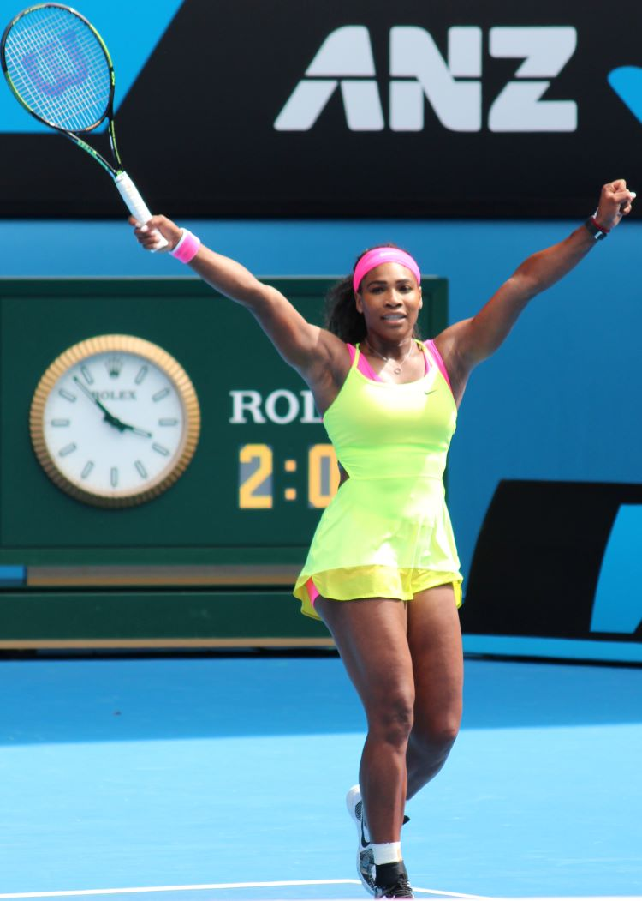
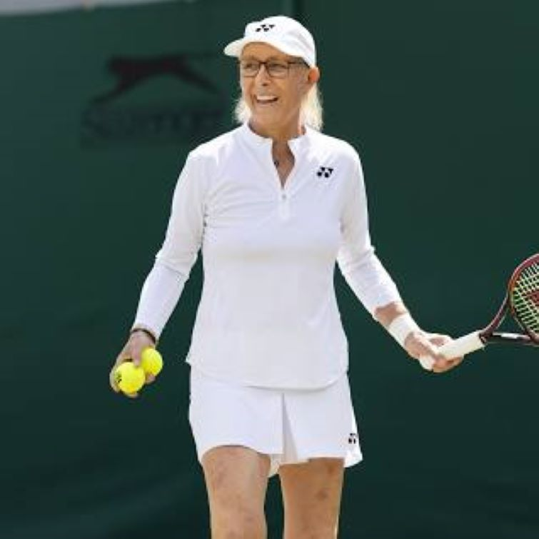

𝓣𝓸𝓹 3 𝓯𝓮𝓶𝓪𝓵𝓮 𝓽𝓮𝓷𝓷𝓲𝓼 𝓰𝓸𝓪𝓽𝓼!
1. Serena Williams

About me!
- Serena's favorite city is Rome.
- Tigers and dogs are Serena's favorite animals.
- The song that Serena is most embarrassed to have stored in her iPhone is “MMMBop” by Hanson, according to espnW.
- The oddest thing in Serena's gym bag is apparently OPI nail polish.
2. Steffi Graf

About me
- Steffi was Introduced to Tennis at the Age of Three!.
- Steffi’s First Championship Top Prizes at a Tender Age.
- Steffi Lost her First Professional Tournament but Won in a Rematch!.
- Steffi’s Father Closely Controlled her Professional Play Time at a Younger Age.
Martina Navratilova

About me!
- Martina also holds several records like the most Single Wimbledon Championships with nine wins and the oldest tennis player to ever win a Grand Slam at almost 50 years old!
- The most successful female tennis player of the Open era, approved Martina Navratilova amassed
an unmatched number of professional records over the course of a career that spanned an amazing four decades.
- Navratilova won nine singles titles at Wimbledon, making her the most successful player, male or female, in the history of SW19.
Her first victory at the iconic tournament came in 1978, beating American Chris Evert in three sets when she was just 21.